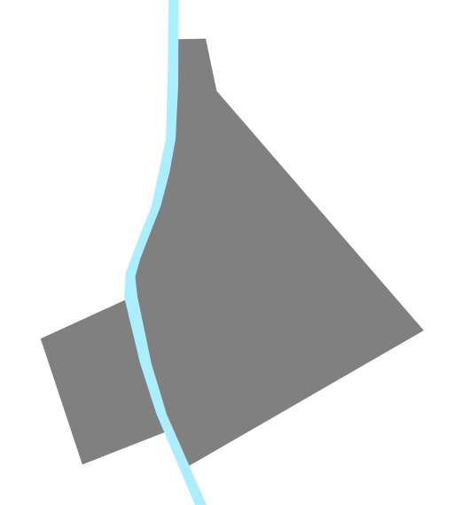
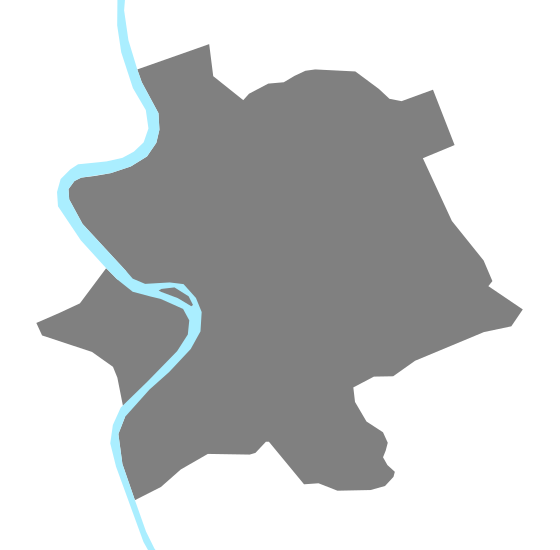
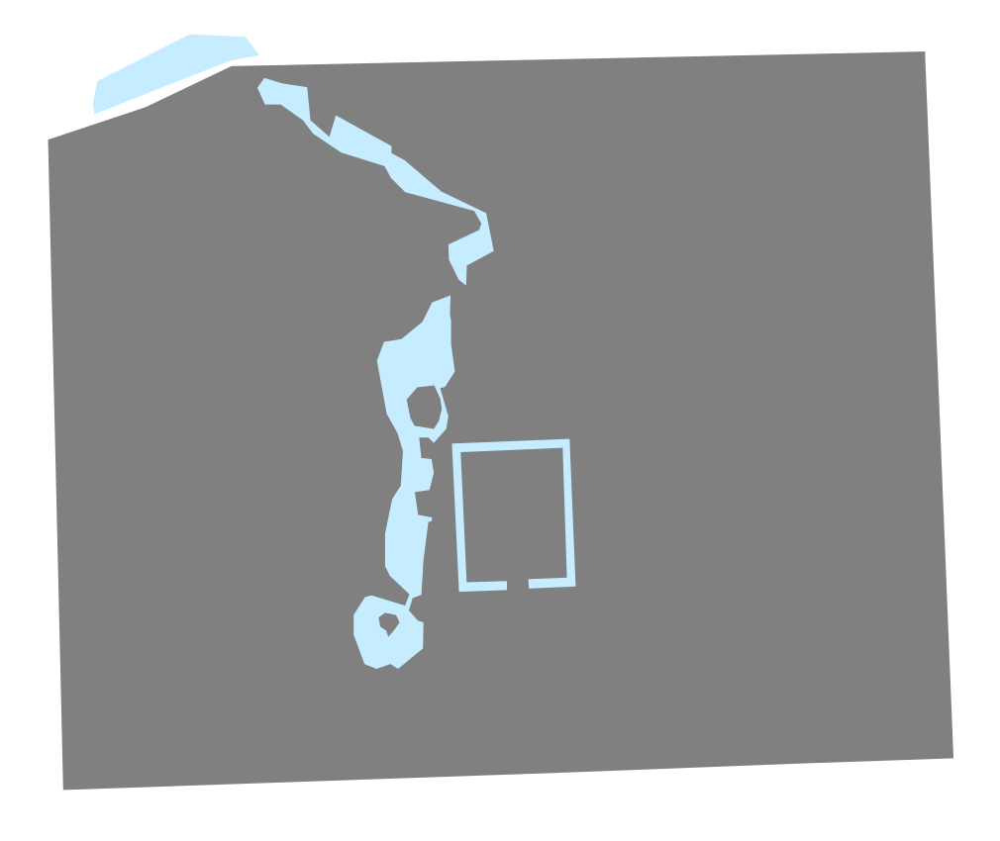

Ancient Walled City Scale Comparison
Babylon, 500 BCEpopulation c. 150,000
 Athens, 400 BCE
population c. 30,000
Rome, 200 BCE
population c. 200,000
Alexandria, 100 BCE
population c. 400,000
Jerusalem, 70 CE
population c. 70,000
 Luoyang, 100 CE
Luoyang, 100 CEpopulation c. 400,000
Rome, 300 CE
population c. 800,000
 Constantinople, 500 CE
population c. 500,000
Chang'an, 700 CE
population c. 1,000,000
Merv, 1100 CE
population c. 200,000
 Cordoba, 1100 CE
Cordoba, 1100 CEpopulation c. 100,000
Hangzhou, 1200 CE
population c. 600,000
Cairo, 1300 CE
population c. 400,000
 Paris, 1400 CE
Paris, 1400 CEpopulation c. 300,000
Beijing, 1500 CE
population c. 700,000
 Tenochtitlan, 1500 CE
population c. 200,000
Venice, 1500 CE
population c. 200,000
Beijing, 1800 CE
population c. 1,100,000
show all hide all
Scale: = 1 km (60 CSS pixels per km)
Population estimates extremely approximate. Please send any corrections or questions to threestationsquare at gmail dot com.
See also: rapid transit timelines - miscellaneous timelines and maps
By Alexander Rapp (CC-BY-SA) based on map data by OpenStreetMap and Wikimedia
(1,2,3,4,5) contributors and historical sources.
{kind=link}
{kind=link}
{kind=link}
{kind=link}
{kind=link}